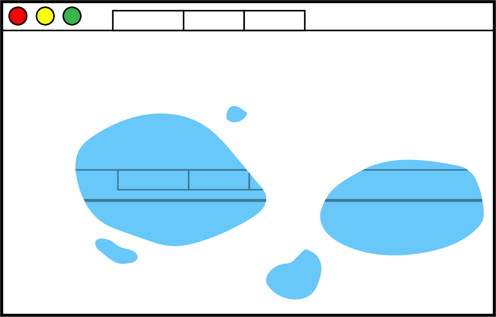

Reading Responses
websites as puddles
puddles evaporate and expand and get splashed in. they can also have reflections in them.

My website is a shifting house next to a river of knowledge. Laurel Schwulst.
find your way back